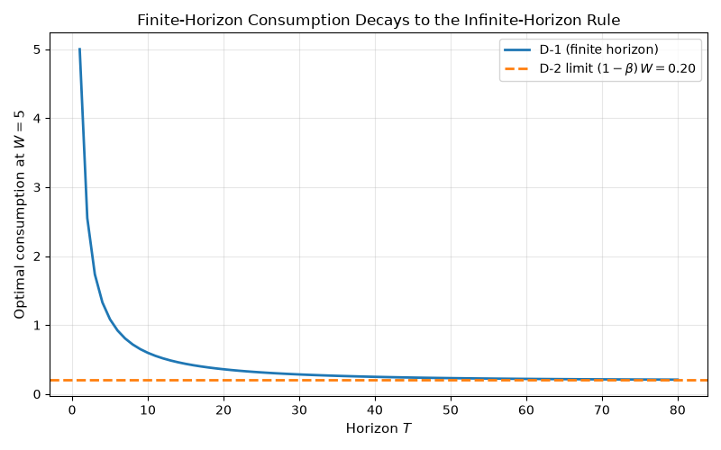
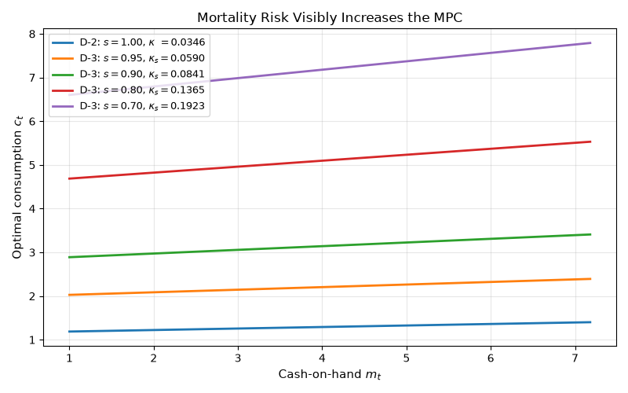
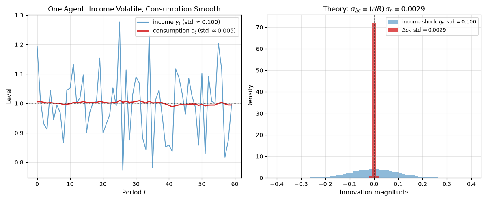
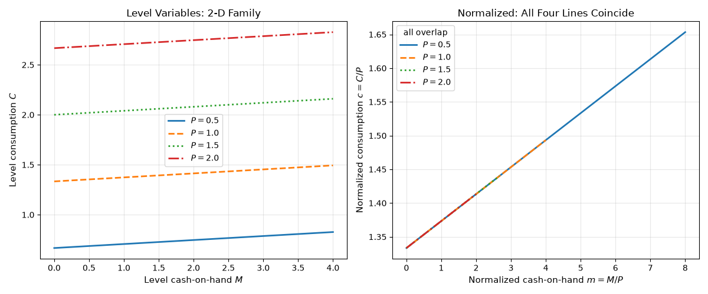
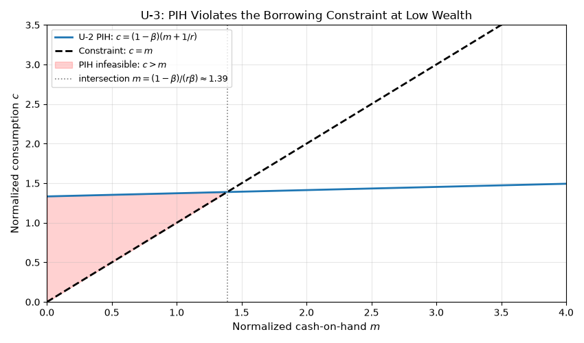

Note
Go to the end to download the full example code.
Benchmark Consumption Models¶
A guided tour of skagent.models.benchmarks. Consumption economics
asks how a household should split each period’s resources between spending now
and saving for later. The closed-form policies in this registry are the classic
answers, and they retrace the theory in roughly the order the field discovered
it. Each model teaches a fact the previous ones could not. Reading from top to
bottom:
Finite horizons fade. Once the distance to the terminal date \(T - t\) is large, the finite-horizon rule is indistinguishable from the infinite-horizon one.
Mortality erodes patience. A survival probability below one acts like extra impatience: it scales the discount factor and pushes up the marginal propensity to consume (MPC), the fraction of an extra dollar of wealth that is spent rather than saved.
Consumption is a martingale. Under \(\beta R = 1\), the change in consumption is the fundamental object, not its level. Income shocks of standard deviation \(\sigma_\eta\) produce consumption changes of standard deviation \((r/R)\,\sigma_\eta\) only, a factor of \(R/r \approx 34\) smaller at this calibration.
Normalization collapses the state. Dividing every level variable by permanent income turns a 2-D Bellman problem into a 1-D one. This trick is what makes neural-network solvers practical for richer models.
Closed forms run out. When no normalization saves you, the model has no closed-form policy, and the registry keeps it around for limit-checking.
The short registry keys in the code and figure labels below (D-1 through
U-3) are internal identifiers; the section titles give the names the models
actually go by.
This example is the runnable companion to Benchmark Models. The code is intentionally verbose; production code should compose helpers, but here every step is written out so the reader can follow the algebra.
Notation¶
Periods are indexed by \(t = 0, 1, 2, \ldots\), and the symbols below carry fixed meaning throughout every model on this page:
\(A_{t-1}\): beginning-of-period assets (the arrival state, before interest);
\(R = 1 + r > 1\): gross return on assets, with net rate \(r\);
\(y_t\): non-capital income realized in period \(t\);
\(m_t = R\, A_{t-1} + y_t\): cash-on-hand (market resources);
\(c_t\): consumption, the control;
\(A_t = m_t - c_t\): end-of-period assets;
\(H_t = \mathbb{E}_t \sum_{s \ge 1} R^{-s}\, y_{t+s}\): human wealth, the present value of expected future income;
\(W_t = m_t + H_t\): total wealth;
\(u(c)\): period utility;
\(\beta\): the discount factor.
The normalized models (U-2, U-3) additionally use lowercase \(m, c, a\) for ratios to permanent income \(P_t\).
References¶
Hall, R.E. (1978). Stochastic implications of the life cycle-permanent income hypothesis. Journal of Political Economy 86(6), 971-987.
Blanchard, O.J. (1985). Debt, deficits, and finite horizons. Journal of Political Economy 93(2), 223-247.
Carroll, C.D. (2024). Solution Methods for Solving Microeconomic Dynamic Stochastic Optimization Problems. https://llorracc.github.io/SolvingMicroDSOPs/
import matplotlib.pyplot as plt
import numpy as np
import torch
from skagent.models.benchmarks import (
EPS_VALIDATION,
get_analytical_policy,
get_benchmark_calibration,
has_analytical_policy,
list_benchmark_models,
validate_analytical_solution,
)
Step 1: What’s in the Registry¶
Five of the seven entries carry an analytical policy that
validate_analytical_solution checks against the standard test grid.
U-3 is registered without one because the borrowing constraint plus
uncertainty break the linearity that every other entry relies on, and
D-4 lacks one because its binding borrowing constraint forecloses a
closed form (its oracle is the value-function-iteration reference
policy from get_reference_policy()).
The helper still reports both as FAILED because no analytical
policy was found, not because anything is wrong with the models.
The registry itself records which models have a closed form, so the
distinction is queried with
has_analytical_policy() rather than
re-derived here.
for model_id, description in list_benchmark_models().items():
marker = "closed form" if has_analytical_policy(model_id) else "numerical only"
result = validate_analytical_solution(
model_id, test_points=20, tolerance=EPS_VALIDATION
)
print(f" {model_id} ({marker:14s}): {result['validation']:6s} {description}")
D-1 (closed form ): PASSED D-1: Finite horizon log utility
D-2 (closed form ): PASSED D-2: Infinite horizon CRRA perfect foresight
D-3 (closed form ): PASSED D-3: Blanchard discrete-time mortality
U-1 (closed form ): PASSED U-1: Hall random walk consumption
U-2 (closed form ): PASSED U-2: Log utility (normalized), no borrowing constraint, σ_ψ=0
U-3 (numerical only): FAILED U-3: Buffer stock model (normalized) with CRRA=2, permanent + transitory shocks
D-4 (numerical only): FAILED D-4: Deterministic CRRA with binding borrowing constraint (no closed form)
Step 2: Finite Horizons Fade Away (D-1 → D-2)¶
The model. D-1 is finite-horizon log utility. With a deterministic terminal date \(T\), the agent solves
and the first-order condition yields the remaining-horizon decision rule
Lesson: A 30-year-old human has an almost infinite-horizon MPC. That is why infinite-horizon models survive as a baseline despite being obviously unrealistic.
D-1’s remaining-horizon MPC is \((1-\beta) / (1 - \beta^{T-t})\). It is above the infinite-horizon constant \((1-\beta)\) for any finite horizon and decays geometrically as \(T - t \to \infty\). Holding wealth fixed at \(W = 5\) and sweeping \(T\), the gap is already below 1% of the limit by \(T = 30\).
beta_d1 = get_benchmark_calibration("D-1")["DiscFac"]
W_fixed = 5.0
horizons = np.arange(1, 81)
# Evaluate the *registered* D-1 policy at fixed wealth W = 5 for each
# horizon T (with t = 0, so the remaining horizon is T). Stacking the
# per-horizon outputs reproduces the remaining-horizon decay while
# exercising the same d1_analytical_policy the test suite validates.
d1_policy = get_analytical_policy("D-1")
d1_calibration = get_benchmark_calibration("D-1")
c_finite = np.array(
[
float(
d1_policy({"W": W_fixed, "t": 0}, {}, {**d1_calibration, "T": int(T)})["c"]
)
for T in horizons
]
)
c_infinite = (1 - beta_d1) * W_fixed
fig, ax = plt.subplots(figsize=(8, 5))
ax.plot(horizons, c_finite, label="D-1 (finite horizon)", linewidth=2)
ax.axhline(
c_infinite,
linestyle="--",
color="C1",
linewidth=2,
label=rf"D-2 limit $(1-\beta)\, W = {c_infinite:.2f}$",
)
ax.set_xlabel("Horizon $T$", fontsize=11)
ax.set_ylabel("Optimal consumption at $W = 5$", fontsize=11)
ax.set_title(
"Finite-Horizon Consumption Decays to the Infinite-Horizon Rule", fontsize=12
)
ax.legend(fontsize=10)
ax.grid(True, alpha=0.3)
fig.tight_layout()

Step 3: Mortality Erodes Patience (D-3)¶
The models. D-2 is the infinite-horizon CRRA workhorse plotted as the limit above. It solves
and its closed form is linear in total wealth,
Here \(\sigma\) is the coefficient of relative risk aversion and \(\kappa\) the constant MPC out of total wealth \(W_t\).
D-3 adds an i.i.d. survival probability \(s \in (0, 1]\): an agent alive today reaches tomorrow with probability \(s\), so it discounts the future by \(s\beta\) in place of \(\beta\). The identical algebra then gives \(\kappa_s = (R - (s\beta R)^{1/\sigma})/R\).
Lesson: I.i.d. mortality risk \(s\) is observationally equivalent to scaling the discount factor from \(\beta\) to \(s\beta\). The MPC \(\kappa_s = (R - (s\beta R)^{1/\sigma})/R\) strictly exceeds the no-mortality MPC \(\kappa\), and the wedge widens as \(s\) falls.
Sweeping \(s \in \{1.0, 0.95, 0.9, 0.8, 0.7\}\) (median lifetime falling from infinity to about 2 periods) makes the wedge visible. At \(s = 0.7\) the agent consumes nearly six times more per dollar of total wealth than at \(s = 1\). Empirical annual mortality at age 30 is around \(s = 0.999\), which is essentially indistinguishable from the no-mortality limit at this scale, but life-cycle models that aggregate over many decades pick up a measurable mortality wedge.
shared = get_benchmark_calibration("D-2")
a_grid = torch.linspace(0.0, 6.0, 121)
m_grid_np = (a_grid * shared["R"] + shared["y"]).numpy()
def _kappa(beta_eff: float) -> float:
"""MPC out of total wealth at effective discount factor ``beta_eff``."""
return (shared["R"] - (beta_eff * shared["R"]) ** (1 / shared["CRRA"])) / shared[
"R"
]
fig, ax = plt.subplots(figsize=(8, 5))
for s in [1.0, 0.95, 0.9, 0.8, 0.7]:
if s == 1.0:
c = get_analytical_policy("D-2")({"a": a_grid}, {}, shared)["c"]
label = rf"D-2: $s = 1.00$, $\kappa\;\,= {_kappa(shared['DiscFac']):.4f}$"
else:
c = get_analytical_policy("D-3")(
{"a": a_grid}, {}, {**shared, "SurvivalProb": s}
)["c"]
label = rf"D-3: $s = {s:.2f}$, $\kappa_s = {_kappa(s * shared['DiscFac']):.4f}$"
ax.plot(m_grid_np, c.numpy(), label=label, linewidth=2)
ax.set_xlabel("Cash-on-hand $m_t$", fontsize=11)
ax.set_ylabel("Optimal consumption $c_t$", fontsize=11)
ax.set_title("Mortality Risk Visibly Increases the MPC", fontsize=12)
ax.legend(fontsize=9, loc="upper left")
ax.grid(True, alpha=0.3)
fig.tight_layout()

Step 4: Hall’s Martingale (U-1)¶
The model. U-1 pairs quadratic utility with the neutral discount condition \(\beta R = 1\) and a stochastic income stream:
for utility constants \(a, b > 0\). Under \(\beta R = 1\) the Euler equation collapses to the martingale property \(\mathbb{E}_t[c_{t+1}] = c_t\), and the decision rule consistent with it (plus a transversality condition ruling out explosive borrowing) is the permanent-income annuity rule
Lesson: Hall’s contribution wasn’t the level of consumption. It was the prediction that, under \(\beta R = 1\), consumption changes are unforecastable from period-\(t\) information, and that the standard deviation of those changes is much smaller than the standard deviation of income.
We simulate U-1 forward with 1000 agents under the analytical policy. The left panel shows one agent’s income (volatile, mean-reverting) against her consumption (smooth, slowly drifting): the textbook image of consumption smoothing. The right panel overlays the histograms of income innovations \(\eta_t\) and consumption changes \(\Delta c_t\). Both are mean-zero, but \(\Delta c_t\) is concentrated near zero while \(\eta_t\) spreads out by a factor of about \(R/r \approx 34\). The closed-form prediction \(\sigma_{\Delta c} = (r/R)\,\sigma_\eta\) drops out exactly because the agent has substituted saving for consumption volatility. Empirical PIH tests are precisely tests of whether this picture survives in real data.
torch.manual_seed(42)
n_agents = 1000
T_sim = 60
calib_u1 = get_benchmark_calibration("U-1")
beta_u1 = calib_u1["DiscFac"]
R_u1 = calib_u1["R"]
sigma_eta = calib_u1["income_std"]
y_mean = calib_u1["y_mean"]
r_u1 = R_u1 - 1
H_u1 = y_mean / r_u1
A_state = torch.zeros(n_agents)
c_paths = torch.zeros(T_sim, n_agents)
y_paths = torch.zeros(T_sim, n_agents)
for t in range(T_sim):
eta = sigma_eta * torch.randn(n_agents)
y = y_mean + eta
m = R_u1 * A_state + y
c = (r_u1 / R_u1) * (m + H_u1)
A_state = m - c
c_paths[t] = c
y_paths[t] = y
dc = (c_paths[1:] - c_paths[:-1]).flatten()
eta_realized = (y_paths - y_mean).flatten()
theoretical_dc_std = (r_u1 / R_u1) * sigma_eta
empirical_dc_std = float(dc.std())
empirical_eta_std = float(eta_realized.std())
fig, axes = plt.subplots(1, 2, figsize=(12, 5))
axes[0].plot(
y_paths[:, 0].numpy(),
label=rf"income $y_t$ (std $\approx {empirical_eta_std:.3f}$)",
color="C0",
alpha=0.7,
linewidth=1.5,
)
axes[0].plot(
c_paths[:, 0].numpy(),
label=rf"consumption $c_t$ (std $\approx {float(c_paths[:, 0].std()):.3f}$)",
color="C3",
linewidth=2,
)
axes[0].axhline(y_mean, linestyle=":", color="k", alpha=0.5, linewidth=1)
axes[0].set_xlabel("Period $t$", fontsize=11)
axes[0].set_ylabel("Level", fontsize=11)
axes[0].set_title("One Agent: Income Volatile, Consumption Smooth", fontsize=12)
axes[0].legend(fontsize=10)
axes[0].grid(True, alpha=0.3)
bins = np.linspace(-0.4, 0.4, 60)
axes[1].hist(
eta_realized.numpy(),
bins=bins,
density=True,
color="C0",
alpha=0.5,
label=rf"income shock $\eta_t$, std$\,= {empirical_eta_std:.3f}$",
)
axes[1].hist(
dc.numpy(),
bins=bins,
density=True,
color="C3",
alpha=0.8,
label=rf"$\Delta c_t$, std$\,= {empirical_dc_std:.4f}$",
)
axes[1].axvline(0, color="k", linestyle="--", linewidth=1, alpha=0.5)
axes[1].set_xlabel("Innovation magnitude", fontsize=11)
axes[1].set_ylabel("Density", fontsize=11)
axes[1].set_title(
rf"Theory: $\sigma_{{\Delta c}} = (r/R)\,\sigma_\eta = {theoretical_dc_std:.4f}$",
fontsize=12,
)
axes[1].legend(fontsize=9)
axes[1].grid(True, alpha=0.3)
fig.tight_layout()

Step 5: Normalization Collapses the State Space (U-2)¶
The model. U-2 is log utility with permanent income shocks, written in variables normalized by permanent income \(P_t\) (lowercase \(m = M/P\), \(c = C/P\), \(a = A/P\)):
where \(\psi\) is the permanent shock and \(\theta\) normalized transitory income (\(\mathbb{E}[\theta] = 1\)). With normalized human wealth \(h = 1/r\), the closed form is the permanent-income line
Lesson: A clever change of variables can turn an \(n\)-dimensional state space into an \((n-1)\)-dimensional one. For U-2 the trick is dividing every level by permanent income \(P_t\), which removes \(P_t\) from the state entirely. A neural-network solver that would have needed to learn a 2-D function \(C(M, P)\) now only has to learn a 1-D function \(c(m)\), an enormous reduction in sample complexity.
Left panel: the level rule \(C = (1-\beta)(M + P/r)\) is a family of parallel lines, one per \(P\). Right panel: the same four policies in normalized variables \((m, c) = (M/P, C/P)\) collapse onto the single curve \(c = (1-\beta)(m + 1/r)\). The four line-styles all trace the same curve; the visual coincidence is the state-space collapse.
calib_u2 = get_benchmark_calibration("U-2")
beta_u2 = calib_u2["DiscFac"]
R_u2 = calib_u2["R"]
r_u2 = R_u2 - 1
P_values = [0.5, 1.0, 1.5, 2.0]
linestyles = ["-", "--", ":", "-."]
M_grid = torch.linspace(0.0, 4.0, 81)
fig, axes = plt.subplots(1, 2, figsize=(12, 5))
for P, ls in zip(P_values, linestyles):
C = (1 - beta_u2) * (M_grid + P / r_u2)
axes[0].plot(
M_grid.numpy(), C.numpy(), label=f"$P = {P}$", linewidth=2, linestyle=ls
)
axes[0].set_xlabel("Level cash-on-hand $M$", fontsize=11)
axes[0].set_ylabel("Level consumption $C$", fontsize=11)
axes[0].set_title("Level Variables: 2-D Family", fontsize=12)
axes[0].legend(fontsize=10)
axes[0].grid(True, alpha=0.3)
for P, ls in zip(P_values, linestyles):
m = M_grid / P
c = (1 - beta_u2) * (m + 1 / r_u2)
axes[1].plot(m.numpy(), c.numpy(), label=f"$P = {P}$", linewidth=2, linestyle=ls)
axes[1].set_xlabel("Normalized cash-on-hand $m = M/P$", fontsize=11)
axes[1].set_ylabel("Normalized consumption $c = C/P$", fontsize=11)
axes[1].set_title("Normalized: All Four Lines Coincide", fontsize=12)
axes[1].legend(fontsize=10, title="all overlap")
axes[1].grid(True, alpha=0.3)
fig.tight_layout()

Step 6: When the Closed Form Breaks (U-3)¶
The model. U-3 is the Carroll buffer-stock problem: U-2’s normalized dynamics with CRRA utility (\(\gamma > 1\)), genuine permanent and transitory shocks, and a binding borrowing constraint \(c \le m\),
The constraint together with income uncertainty breaks the linearity that every other entry relies on, so U-3 has no closed-form policy; only its limiting MPC properties are known (the MPC stays in \((0, 1)\), decreases in wealth, and converges to D-2’s \(\kappa\) as \(m \to \infty\)).
Lesson: U-3 is U-2 plus a binding borrowing constraint
\(c \leq m\). The U-2 closed form still satisfies the Euler equation
everywhere, but it violates the constraint at low \(m\), because at
\(m = 0\) it prescribes \(c = (1-\beta)/r > 0\) (the agent
wants to borrow against future income). Below the intersection of the
PIH line with the constraint \(c = m\), the U-2 policy is
infeasible. Above the intersection, it is feasible but suboptimal,
because the U-3 agent has precautionary saving motives that U-2 lacks.
The actual U-3 policy bends below the PIH line at moderate \(m\)
and approaches D-2’s \(\kappa\) only as \(m \to \infty\).
Neither bend nor approach has a closed form, which is exactly why U-3
is in the registry as "numerical only".
m_u3 = torch.linspace(0.0, 4.0, 81)
c_pih = (1 - beta_u2) * (m_u3 + 1 / r_u2)
intersect_m = (1 - beta_u2) / (r_u2 * beta_u2) # solves (1-β)(m+1/r) = m
fig, ax = plt.subplots(figsize=(8.5, 5))
ax.plot(
m_u3.numpy(),
c_pih.numpy(),
label=r"U-2 PIH: $c = (1-\beta)(m + 1/r)$",
linewidth=2,
)
ax.plot(
m_u3.numpy(),
m_u3.numpy(),
label=r"Constraint: $c = m$",
linewidth=2,
linestyle="--",
color="k",
)
ax.fill_between(
m_u3.numpy(),
c_pih.numpy(),
m_u3.numpy(),
where=(c_pih > m_u3).numpy(),
color="red",
alpha=0.18,
label=r"PIH infeasible: $c > m$",
)
ax.axvline(
intersect_m,
color="grey",
linestyle=":",
linewidth=1.2,
label=rf"intersection $m = (1-\beta)/(r\beta) \approx {intersect_m:.2f}$",
)
ax.set_xlabel("Normalized cash-on-hand $m$", fontsize=11)
ax.set_ylabel("Normalized consumption $c$", fontsize=11)
ax.set_title("U-3: PIH Violates the Borrowing Constraint at Low Wealth", fontsize=12)
ax.legend(fontsize=9, loc="upper left")
ax.grid(True, alpha=0.3)
ax.set_xlim(0, 4)
ax.set_ylim(0, 3.5)
fig.tight_layout()
try:
get_analytical_policy("U-3")
except ValueError as exc:
print("U-3 has no analytical policy by design:")
print(f" {exc}")

U-3 has no analytical policy by design:
Model 'U-3' does not have an analytical policy. This model requires numerical solution via Euler equation training. Use EulerEquationLoss with maliar_training_loop (constrained=True for models with upper-bound constrained controls). See tests/test_maliar.py for examples.
Where to Read Next¶
Benchmark Models for the registry roster and the helper functions used to fetch, validate, and list these models.
Models for the full API reference, including the standalone modules (Fisher, perfect foresight, resource extraction).
Algorithms Guide covers the numerical solvers used for models like U-3 that have no closed form.
The other examples in this gallery wire benchmark blocks into Monte Carlo simulators and reinforcement learning loops.
plt.show()
Total running time of the script: (0 minutes 1.080 seconds)